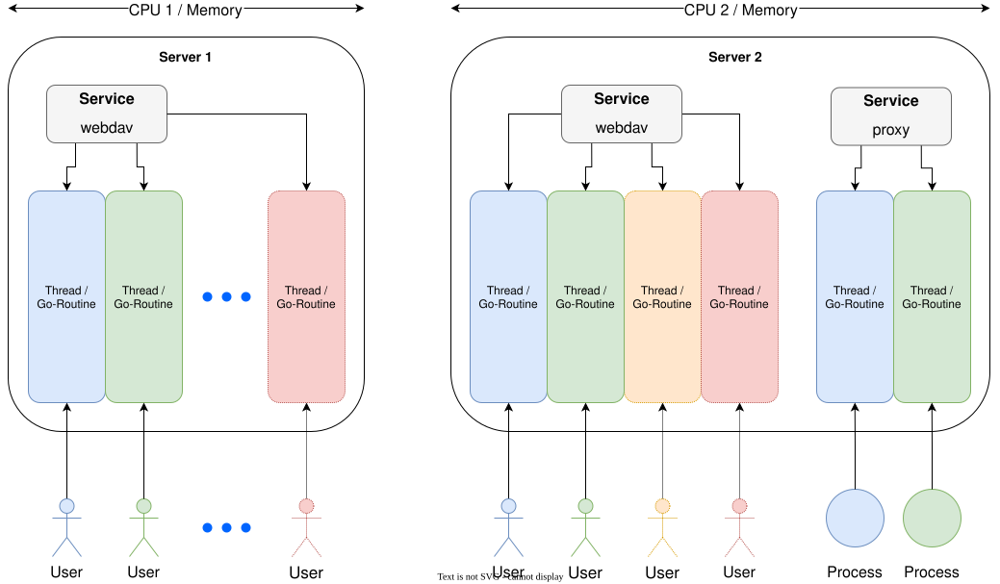
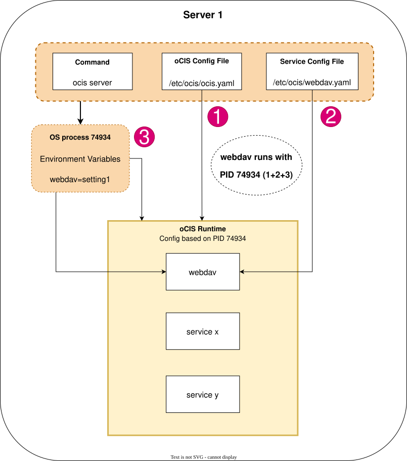

Service Rules
Introduction
This document describes how concurrencies are handled with go/Infinite Scale, how this impacts instantiation of services and how configuration of a service works.
Instantiation of Services
Services get connected by a user or process. Due to the nature of , the programming language used for Infinite Scale, each connection will create a thread which will be terminated when the connection ends. This means that as long as you have sufficient resources regarding CPU and memory, there will be as many threads created by services as necessary and terminated accordingly. All services started on the server share the same resource pool.
In the image below, the services used are just examples. It could be one service or many services running concurrently. The image illustrates the following:
-
As long as you have resources available, the running service will create and terminate threads automatically.
-
There is no need to instantiate a service on the same server to balance load.
-
If you increase the resource pool on the server, you can:
-
have more connections for existing services,
-
run additional but different services.
-
-
If the resource pool reaches its limits, you can create additional instances of services on a different server.
-
There are only a few exceptions like storage connectors as they will have a different configuration for each type of storage.
These statements are true when using the runtime as well as when running services independent of the runtime.

Runtime Services
-
With the command
ocis server, all services are started with the runtime and share the same PID. If you do not want to start all services available, you have two choices, both using environment variables, useful if you want to try starting a set of services outside the runtime, e.g. when testing orchestration:-
With
OCIS_RUN_SERVICESyou define all services you want to start and leave out all you don’t want to start:OCIS_RUN_SERVICES=settings,storage-system, \ graph,graph-explorer,idp,ocs,store,thumbnails, \ web,webdav,frontend,gateway,users, groups, \ auth-basic,auth-bearer,storage-authmachine, \ storage-users,storage-shares,storage-publiclink, \ app-provider,sharing,proxy,ocdav \ ocis server -
With
OCIS_EXCLUDE_RUN_SERVICESyou define all services you do not want to start, out of all available services which would normally be started:OCIS_EXCLUDE_RUN_SERVICES=auth-basic,storage-publiclink \ ocis serverThis environment variable has no effect when OCIS_RUN_SERVICESis set, only one can be used.
-
-
Runtime services rules
-
You cannot instantiate a runtime service
-
All runtime services are a part of the
ocis serverprocess and therefore share the same process ID (PID). -
Runtime services share the same PID while non-runtime services have their own PID.
-
Configuration Rules
Note that in the examples described, only the webdav service is used, but the process is valid for all services available.
- Example
-
You start the Infinite Scale runtime with
ocis server.-
The configuration file
/etc/ocis/ocis.yamlis read. -
The configuration file
/etc/ocis/webdav.yamlis read AND applied. -
The environment variables are read and applied. These can overwrite already existing configuration elements. See section Configuration Rules about the order in which different configurations get applied (config arithmetics).
All services have started, share the same PID and have a defined config. Typing
ocis listshows all active runtime services. -
This image gives you a graphical representation of the rule set described above.
